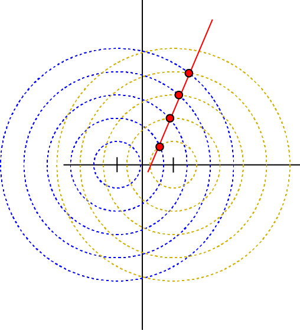
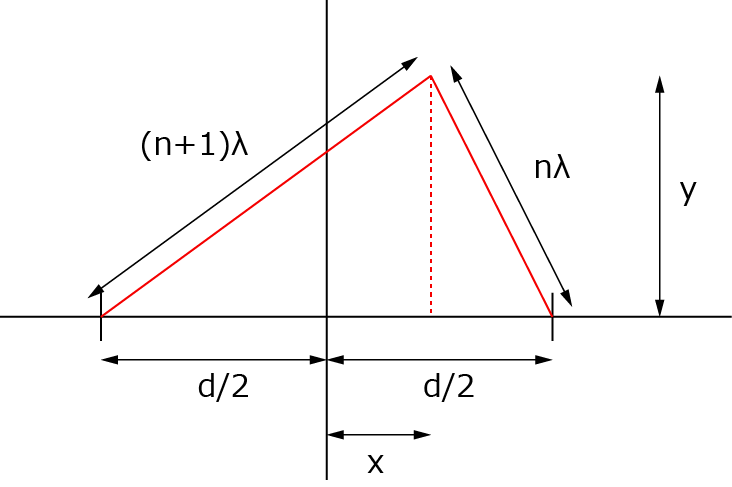

回折光は直線か？-01
回折光
一般的な教科書では，2点から発せられた同心円状の波のちょうど重なる点を結んだ線が1次光，2次光．．と言われていますね．

でも．．．これって本当に直線なのでしょうか？また，回折の式，と一致するのでしょうか？
確かめてみましょう！
それぞれからの波の振幅が一致するには，波長λの波のｎ番目とn+1番目の波が同じ位置に存在することになりますね．

従って，
\(\Large \begin{eqnarray} y^2 &=& \{ (n+1) \lambda \}^2 - \left( \frac{d}{2} + x \right)^2 \\
&=& (n \lambda)^2 - \left( \frac{d}{2} - x \right)^2
\end{eqnarray} \)
を満たす必要があります．従って，
\(\Large \{ (n+1) \lambda \}^2 - \left( \frac{d}{2} + x \right)^2 = (n \lambda)^2 - \left( \frac{d}{2} - x \right)^2 \)
\(\Large n^2 \lambda + 2n \lambda^2 + \lambda^2 -\frac{d^2}{4} - d \ x - x^2 = n^2 \lambda^2 -\frac{d^2}{4} + d \ x - x^2 \)
整理すると，
\(\Large (2n+1) \lambda^2 = 2 \ d \ x \)
\(\Large x = \frac{ (2n+1) \lambda^2}{2 \ d} \)
となります．
ｙに関しては，右側の三角形から，まずはy2を求めてみましょう．
\(\Large \begin{eqnarray} y^2 &=& (n \lambda)^2 - \left( \frac{d}{2} - x \right)^2 \\
&=&
(n \lambda)^2 - \left( \frac{d}{2} - \frac{ (2n+1) \lambda^2}{2 \ d} \right)^2 \\
&=& (n \lambda)^2 - \left( \frac{d^2}{4} -2 \frac{d}{2} \frac{ (2n+1) \lambda^2}{2 \ d} + \left( \frac{ (2n+1) \lambda^2}{2 \ d} \right)^2 \right) \\
&=& (n \lambda)^2 - \frac{d^4 - 2 d^2 (2n+1)
\lambda^2 + (2n+1)^2
\lambda^4}{4 d^2} \\
&=& - \frac{ -4 d^2 n^2 \lambda^2 + d^4 - 2 d^2 (2n+1)
\lambda^2 + (2n+1)^2
\lambda^4}{4 d^2} \\
&=& - \frac{ -4 d^2 n^2 \lambda^2 + d^4 - 4 d^2n
\lambda^2 -2 d^2 \lambda^2 + 4 n^2
\lambda^4 + 4 n \lambda^4 + \lambda^4}{4 d^2} \\
\end{eqnarray} \)
ここで，\(\Large -2 d^2 \lambda^2 \) を二つに分けて，
\(\Large \begin{eqnarray} y^2 &=& - \frac{ d^4 - d^2 \lambda^2 ( 4 n^2 +4 n +1) - d^2
\lambda^2 + \lambda^4 ( 4 n^2 +4 n +1) }{4 d^2} \\
&=& - \frac{ d^4 - d^2 \lambda^2 (2 n + 1)^2 - d^2
\lambda^2 + \lambda^4 ( 2 n +1)^2 }{4 d^2} \\
&=& - \frac{ d^2 (d^2 - \lambda^2) - \lambda^2 ( 2 n +1)^2 (d^2 - \lambda^2)}{4 d^2} \\
&=& - \frac{ (d^2 - \lambda^2) (d^2 - \lambda^2 ( 2 n +1)^2)}{4 d^2} \\
\end{eqnarray} \)
となるので，
\(\Large y = \sqrt{- \frac{ (d^2 - \lambda^2) (d^2 - \lambda^2 ( 2 n +1)^2)}{4 d^2}} \)
となります．
次に，ｘ，ｙとｎの関係を求めていきましょう．